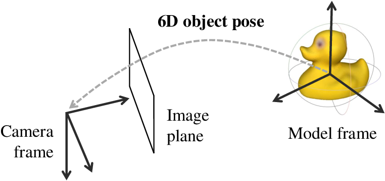
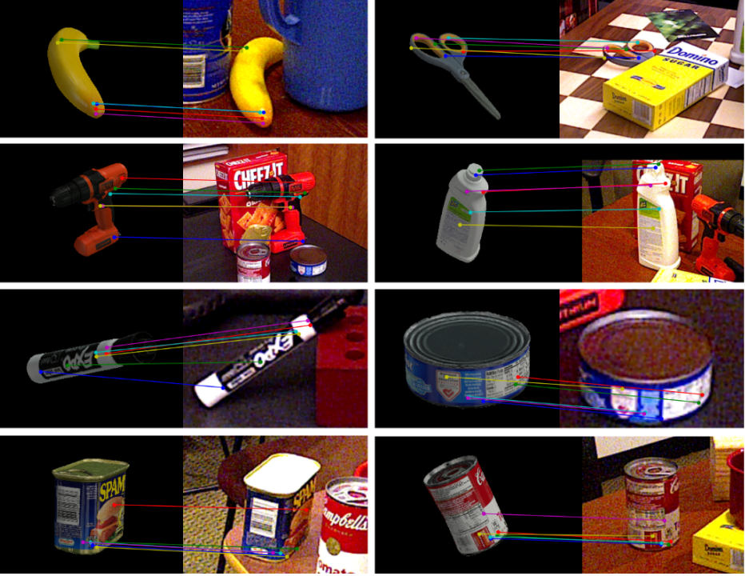
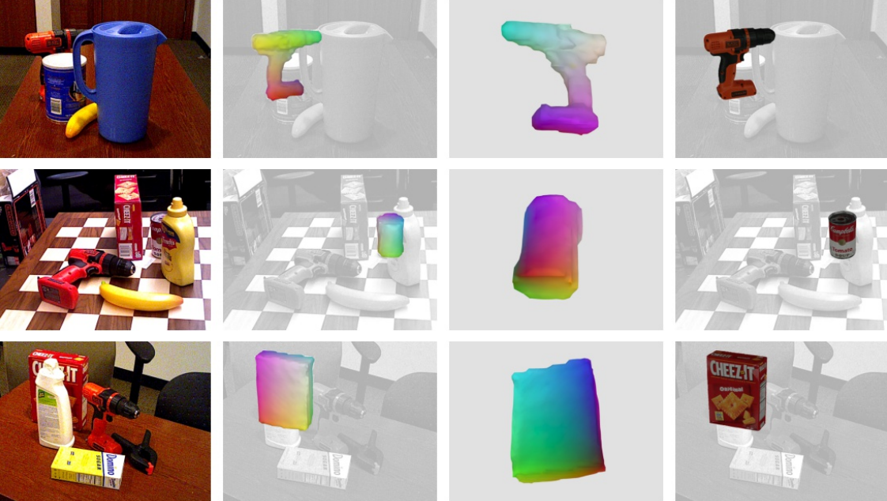
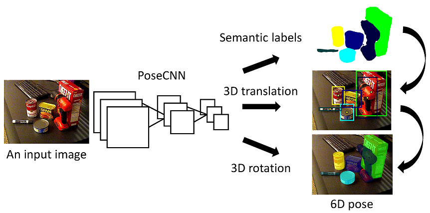
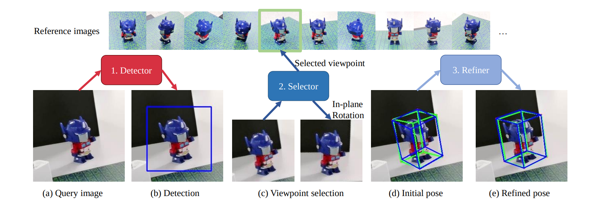
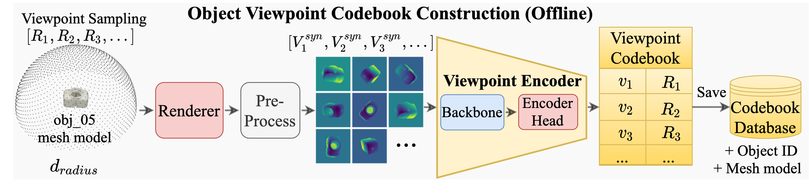
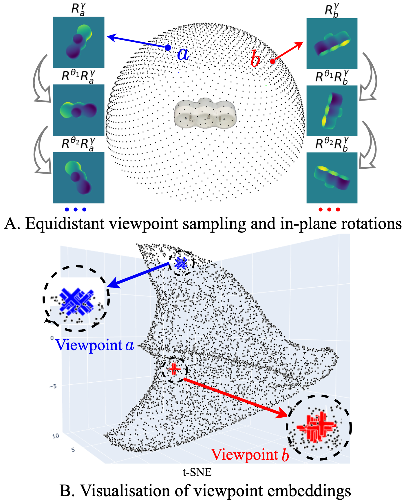
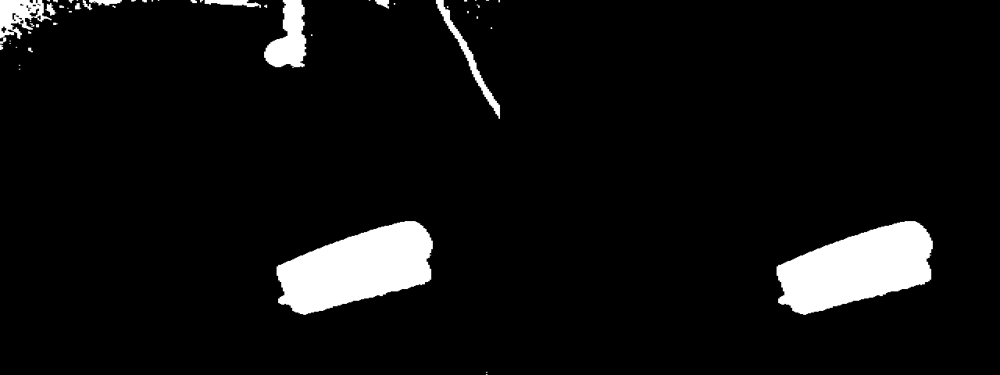
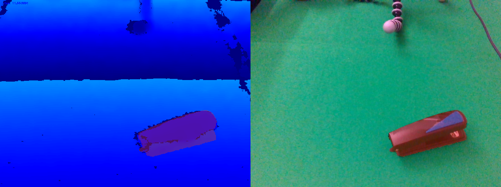

<!DOCTYPE html>
<html lang="en">
  <head>
    <meta charset="utf-8" />
    <meta name="viewport" content="width=device-width, initial-scale=1.0, maximum-scale=1.0, user-scalable=no" />

    <title></title>
    <link rel="stylesheet" href="dist/reveal.css" />
    <link rel="stylesheet" href="dist/theme/black.css" id="theme" />
    <link rel="stylesheet" href="plugin/highlight/zenburn.css" />
	<link rel="stylesheet" href="css/layout.css" />
	<link rel="stylesheet" href="plugin/customcontrols/style.css">


    <script defer src="dist/fontawesome/all.min.js"></script>

	<script type="text/javascript">
		var forgetPop = true;
		function onPopState(event) {
			if(forgetPop){
				forgetPop = false;
			} else {
				parent.postMessage(event.target.location.href, "app://obsidian.md");
			}
        }
		window.onpopstate = onPopState;
		window.onmessage = event => {
			if(event.data == "reload"){
				window.document.location.reload();
			}
			forgetPop = true;
		}

		function fitElements(){
			const itemsToFit = document.getElementsByClassName('fitText');
			for (const item in itemsToFit) {
				if (Object.hasOwnProperty.call(itemsToFit, item)) {
					var element = itemsToFit[item];
					fitElement(element,1, 1000);
					element.classList.remove('fitText');
				}
			}
		}

		function fitElement(element, start, end){

			let size = (end + start) / 2;
			element.style.fontSize = `${size}px`;

			if(Math.abs(start - end) < 1){
				while(element.scrollHeight > element.offsetHeight){
					size--;
					element.style.fontSize = `${size}px`;
				}
				return;
			}

			if(element.scrollHeight > element.offsetHeight){
				fitElement(element, start, size);
			} else {
				fitElement(element, size, end);
			}		
		}


		document.onreadystatechange = () => {
			fitElements();
			if (document.readyState === 'complete') {
				if (window.location.href.indexOf("?export") != -1){
					parent.postMessage(event.target.location.href, "app://obsidian.md");
				}
				if (window.location.href.indexOf("print-pdf") != -1){
					let stateCheck = setInterval(() => {
						clearInterval(stateCheck);
						window.print();
					}, 250);
				}
			}
	};


        </script>
  </head>
  <body>
    <div class="reveal">
      <div class="slides"><section  data-markdown><script type="text/template"><!-- .slide: class="drop" -->
<div class="" style="position: absolute; left: 0px; top: 0px; height: 1200px; width: 1920px; min-height: 1200px; display: flex; flex-direction: column; align-items: center; justify-content: center" absolute="true">

# Evaluating a Depth Based 6D Pose Estimation Model In The Wild.
</div></script></section><section  data-markdown><script type="text/template"><!-- .slide: class="drop" -->
<div class="" style="position: absolute; left: 0px; top: 0px; height: 1200px; width: 1920px; min-height: 1200px; display: flex; flex-direction: column; align-items: center; justify-content: center" absolute="true">

# Primer on 6D pose estimation
- Useful in Robotic grasping, Autonomous driving and Augmented/Mixed Reality applications
- **Pose** A mapping from object coordinate frame to camera coordinate frame.
- Object coodrinate frame centered on the object `$\{x^{3D}_i, i = 1,2,\dots,N\}$` 



_(Hodan, PhD thesis, 2021)_
</div></script></section><section  data-markdown><script type="text/template"><!-- .slide: class="drop" -->
<div class="" style="position: absolute; left: 0px; top: 0px; height: 1200px; width: 1920px; min-height: 1200px; display: flex; flex-direction: column; align-items: center; justify-content: center" absolute="true">

### Pose estimation models find a feasible transformation
`$(R, t) \in \mathbb{SE}(3)$`
### Flavors include but not limited to:
- **Instance level pose estimation**
	- Template based methods
	- Correspondence based methods
	- Direct methods
</div></script></section><section  data-markdown><script type="text/template"><!-- .slide: class="drop" -->
<div class="" style="position: absolute; left: 0px; top: 0px; height: 1200px; width: 1920px; min-height: 1200px; display: flex; flex-direction: column; align-items: center; justify-content: center" absolute="true">

## Correspondence based (2D-to-3D or 3D-to-3D)

- **Solve Perspective-n-point (PnP) problem:** Project a set of 3D points `$x^{3D}$` onto an image plane in a way that matches your sensor observation `$x^{2D}$`:
`$$
\underset{R||t \in \mathbb{SE}(3)}{\operatorname{argmin}}
|     | x_i^{2D} - \pi(︁Rx^{3D}_i + t | K)︁ |     | , 
$$`
where
$$`
\begin{align}
R \in \mathbb{R}^{3\times3}, \ t \in \mathbb{R}^{3} \\
\pi:\mathbb{R}^{3} \rightarrow \mathbb{R}^{2}
\end{align}
$$`
</div></script></section><section  data-markdown><script type="text/template"><!-- .slide: class="drop" -->
<div class="" style="position: absolute; left: 0px; top: 0px; height: 1200px; width: 1920px; min-height: 1200px; display: flex; flex-direction: column; align-items: center; justify-content: center" absolute="true">

### Predefined keypoints
**Find _(regress/classify/extract)_ features from your observation that correspond to known features defined on the available 3D object coordinate frame**




_(Coupled Iterative Refinement for 6D Multi-Object Pose Estimation, Lipson et. al. , 2022)_
</div></script></section><section  data-markdown><script type="text/template"><!-- .slide: class="drop" -->
<div class="" style="position: absolute; left: 0px; top: 0px; height: 1200px; width: 1920px; min-height: 1200px; display: flex; flex-direction: column; align-items: center; justify-content: center" absolute="true">

### Dense correspondence
- Find for each 2D or 3D point in a segmented region of the image, corresponding best fit 3D points on the object coordinate frame.



(Neural Correspondence Field for Object Pose Estimation, Huang et.al., ECCV 2022)
</div></script></section><section  data-markdown><script type="text/template"><!-- .slide: class="drop" -->
<div class="" style="position: absolute; left: 0px; top: 0px; height: 1200px; width: 1920px; min-height: 1200px; display: flex; flex-direction: column; align-items: center; justify-content: center" absolute="true">

## Direct methods
- Given an input image --> Regress/Classify 6D pose directly (Quaternion/Euler angles)



_(PoseCNN, Xiang et.al., RSS 2018)_
- Regression possibly more difficult due to a larger continuous search space.
- Underpeforms compared to correspondence based methods (Deep Learning on Monocular Object Pose Detection and Tracking: A Comprehensive Overview, Fan et. al. ACM 2022)
</div></script></section><section  data-markdown><script type="text/template"><!-- .slide: class="drop" -->
<div class="" style="position: absolute; left: 0px; top: 0px; height: 1200px; width: 1920px; min-height: 1200px; display: flex; flex-direction: column; align-items: center; justify-content: center" absolute="true">

## Template based (OVE6D)

Template can be an offline formed representation of the object of interest
</div></script></section><section  data-markdown><script type="text/template"><!-- .slide: class="drop" -->
<div class="" style="position: absolute; left: 0px; top: 0px; height: 1200px; width: 1920px; min-height: 1200px; display: flex; flex-direction: column; align-items: center; justify-content: center" absolute="true">

Capture video with labeled poses. Or label the poses onto the video after recording.


_(Gen6D, Liu et. al., ECCV 2022)_
</div></script></section><section  data-markdown><script type="text/template"><!-- .slide: class="drop" -->
<div class="" style="position: absolute; left: 0px; top: 0px; height: 1200px; width: 1920px; min-height: 1200px; display: flex; flex-direction: column; align-items: center; justify-content: center" absolute="true">

Render 3D model from different viewpoints and try to find the nearest to your inference image.


_(OVE6D, Cai et.al., CVPR 2022)_
</div></script></section><section  data-markdown><script type="text/template"><!-- .slide: class="drop" -->
<div class="" style="position: absolute; left: 0px; top: 0px; height: 1200px; width: 1920px; min-height: 1200px; display: flex; flex-direction: column; align-items: center; justify-content: center" absolute="true">

## OVE6D: Object Viewpoint Encoding for Depth-based 6D Object Pose Estimation

- **Template based method**
- **Assumes CAD model and segmentation mask are available**


_(OVE6D, Cai et. al.)_
</div></script></section><section  data-markdown><script type="text/template"><!-- .slide: class="drop" -->
<div class="" style="position: absolute; left: 0px; top: 0px; height: 1200px; width: 1920px; min-height: 1200px; display: flex; flex-direction: column; align-items: center; justify-content: center" absolute="true">

1. Form a codebook for the object of interest from the scanned 3D model.
2. Estimate initial location `$t_0$` with segment depth `$V$`.
3. Encode input into an in-plane rotation invariant representation.



_(OVE6D, Cai et. al.)_
`$\dots \rightarrow$`
</div></script></section><section  data-markdown><script type="text/template"><!-- .slide: class="drop" -->
<div class="" style="position: absolute; left: 0px; top: 0px; height: 1200px; width: 1920px; min-height: 1200px; display: flex; flex-direction: column; align-items: center; justify-content: center" absolute="true">

4. Find best fit viewpoint estimate
$
\underset{i \in (1,2,\dots,N)}{\operatorname{argmax}}
\langle \frac{v}{||v||},\frac{v_i}{||v_i||}\rangle
$
5. Regress and verify in-plane rotation and refine `$t_0$`
6. ``return R, t``


_(OVE6D, Cai et. al.)_
</div></script></section><section  data-markdown><script type="text/template"><!-- .slide: class="drop" -->
<div class="" style="position: absolute; left: 0px; top: 0px; height: 1200px; width: 1920px; min-height: 1200px; display: flex; flex-direction: column; align-items: center; justify-content: center" absolute="true">

## Obtaining "CAD" models
- Many existing mobile applications for reconstructing 3D models.
- Chose PolyCam which constructed an almost up to scale mesh model using photogrammetry
	- Errors on the scale of 0.5-1 cm
</div></script></section><section  data-markdown><script type="text/template"><!-- .slide: class="drop" -->
<div class="" style="position: absolute; left: 0px; top: 0px; height: 1200px; width: 1920px; min-height: 1200px; display: flex; flex-direction: column; align-items: center; justify-content: center" absolute="true">

### Example scans
<video 
	data-autoplay loop controls src="PoseEstimation/Presentations/assets/cad_videos/budha_cad.mp4" width="500">
</video>
<video
	data-autoplay loop controls src="PoseEstimation/Presentations/assets/cad_videos/pot_polycam.mp4" width="500">
</video>
<video
	data-autoplay loop controls src="PoseEstimation/Presentations/assets/cad_videos/gear_assembled_ply.mp4" width="500">
</video>
<video
	data-autoplay loop controls src="PoseEstimation/Presentations/assets/cad_videos/drone_polycam.mp4" width="500">
</video>
</div></script></section><section  data-markdown><script type="text/template"><!-- .slide: class="drop" -->
<div class="" style="position: absolute; left: 0px; top: 0px; height: 1200px; width: 1920px; min-height: 1200px; display: flex; flex-direction: column; align-items: center; justify-content: center" absolute="true">

## Object segmentation
#### Green screen chroma-keying

1. Remove background given a predefined color (green) in YCbCr colorspace _(left figure)_
	- Treshold on pixel value distance to color key value.
2. Postprocess to clean the mask. _(right figure)_


</div></script></section><section  data-markdown><script type="text/template"><!-- .slide: class="drop" -->
<div class="" style="position: absolute; left: 0px; top: 0px; height: 1200px; width: 1920px; min-height: 1200px; display: flex; flex-direction: column; align-items: center; justify-content: center" absolute="true">

1. Remove background given a predefined color (green)
	- Treshold on pixel value distance to color key value.
2. Post process to clean the mask.
3. Apply mask on input Depth _(left figure)_ and RGB _(right figure)_


</div></script></section><section  data-markdown><script type="text/template"><!-- .slide: class="drop" -->
<div class="" style="position: absolute; left: 0px; top: 0px; height: 1200px; width: 1920px; min-height: 1200px; display: flex; flex-direction: column; align-items: center; justify-content: center" absolute="true">

## Qualitative results.
<video
	data-autoplay loop controls src="PoseEstimation/Presentations/assets/Results/head_phones.mp4">
</video>
<video 
	data-autoplay loop controls src="PoseEstimation/Presentations/assets/Results/pot.mp4">
</video>
<video 
	data-autoplay loop controls src="PoseEstimation/Presentations/assets/Results/gear_assembled.mp4">
</video>
<video 
	data-autoplay loop controls src="PoseEstimation/Presentations/assets/Results/drone.mp4">
</video>

</div></script></section><section  data-markdown><script type="text/template"><!-- .slide: class="drop" -->
<div class="" style="position: absolute; left: 0px; top: 0px; height: 1200px; width: 1920px; min-height: 1200px; display: flex; flex-direction: column; align-items: center; justify-content: center" absolute="true">

### Things I learned? Mistakes? Questions?
</div></script></section></div>
    </div>

    <script src="dist/reveal.js"></script>

    <script src="plugin/markdown/markdown.js"></script>
    <script src="plugin/highlight/highlight.js"></script>
    <script src="plugin/zoom/zoom.js"></script>
    <script src="plugin/notes/notes.js"></script>
    <script src="plugin/math/math.js"></script>
	<script src="plugin/mermaid/mermaid.js"></script>
	<script src="plugin/chart/chart.min.js"></script>
	<script src="plugin/chart/plugin.js"></script>
	<script src="plugin/customcontrols/plugin.js"></script>

    <script>
      function extend() {
        var target = {};
        for (var i = 0; i < arguments.length; i++) {
          var source = arguments[i];
          for (var key in source) {
            if (source.hasOwnProperty(key)) {
              target[key] = source[key];
            }
          }
        }
        return target;
      }

	  function isLight(color) {
		let hex = color.replace('#', '');

		// convert #fff => #ffffff
		if(hex.length == 3){
			hex = `${hex[0]}${hex[0]}${hex[1]}${hex[1]}${hex[2]}${hex[2]}`;
		}

		const c_r = parseInt(hex.substr(0, 2), 16);
		const c_g = parseInt(hex.substr(2, 2), 16);
		const c_b = parseInt(hex.substr(4, 2), 16);
		const brightness = ((c_r * 299) + (c_g * 587) + (c_b * 114)) / 1000;
		return brightness > 155;
	}

	var bgColor = getComputedStyle(document.documentElement).getPropertyValue('--r-background-color').trim();
	var isLight = isLight(bgColor);

	if(isLight){
		document.body.classList.add('has-light-background');
	} else {
		document.body.classList.add('has-dark-background');
	}

      // default options to init reveal.js
      var defaultOptions = {
        controls: true,
        progress: true,
        history: true,
        center: true,
        transition: 'default', // none/fade/slide/convex/concave/zoom
        plugins: [
          RevealMarkdown,
          RevealHighlight,
          RevealZoom,
          RevealNotes,
          RevealMath.MathJax3,
		  RevealMermaid,
		  RevealChart,
		  RevealCustomControls,
        ],


    	allottedTime: 120 * 1000,

		mathjax3: {
			mathjax: 'plugin/math/mathjax/tex-mml-chtml.js',
		},
		markdown: {
		  gfm: true,
		  mangle: true,
		  pedantic: false,
		  smartLists: false,
		  smartypants: false,
		},

		mermaid: {
			theme: isLight ? 'default' : 'dark',
		},

		customcontrols: {
			controls: [
			]
		},
      };

      // options from URL query string
      var queryOptions = Reveal().getQueryHash() || {};

      var options = extend(defaultOptions, {"width":1920,"height":1200,"margin":0,"controls":true,"progress":true,"slideNumber":false,"transition":"slide","transitionSpeed":"default"}, queryOptions);
    </script>

    <script>
      Reveal.initialize(options);
    </script>
  </body>

  <!-- created with Advanced Slides -->
</html>
